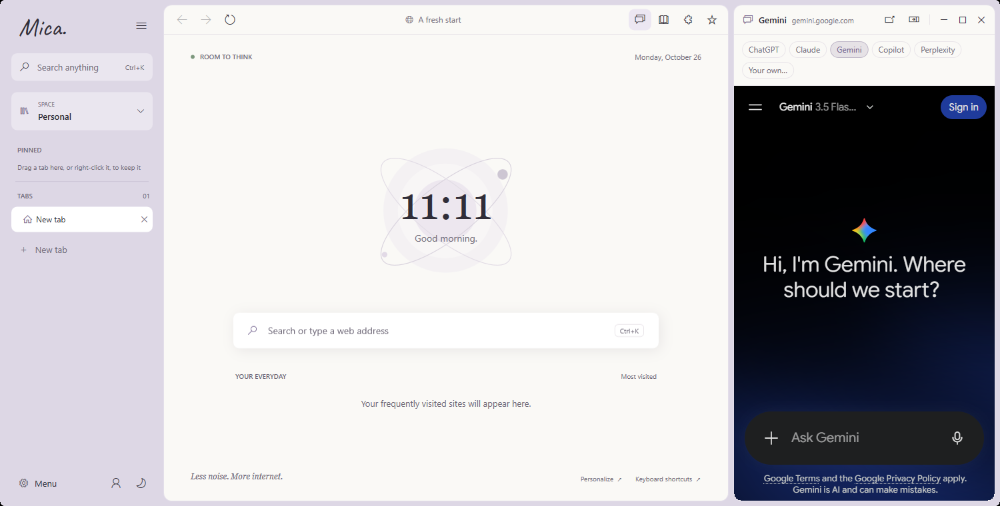
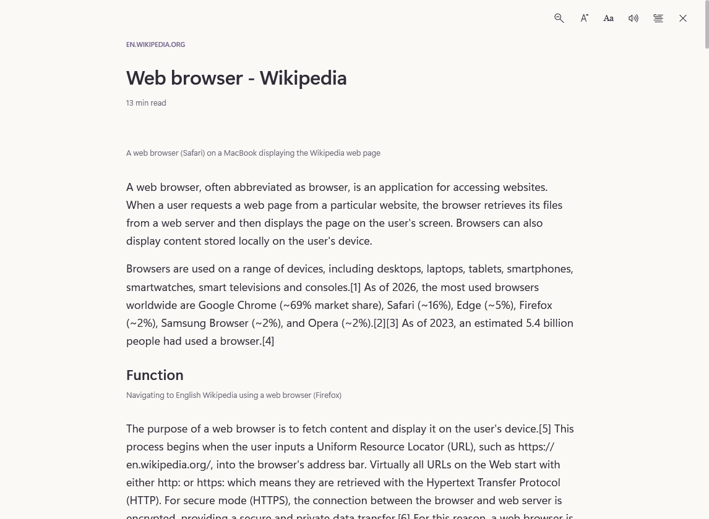

AI side panel
Ask beside the page.
ChatGPT, Claude, Gemini, Copilot, Perplexity or your own, in a panel next to what you're reading. Select text and ask about it. The Claude and ChatGPT extensions work too.

Mica for Windows, Mac and Linux
A calm browser that keeps work and life apart, finds any tab in a keystroke, and keeps an AI one click away.

Your new tab

A clock, your favourite sites and one search box.
Nothing else asks for your attention.
Mica blocks ads before they load. It keeps your passwords encrypted on your own device. It puts every tab, in every Space, one keystroke away. And it stays out of the way while you work.
Spotlight


Search open tabs in every Space, your bookmarks and history, or jump straight to the web.
The island
A quiet card in the corner of the page. It grows for a download, the song playing in another tab or a zoom change, then shrinks back. Move the pointer near it and it steps aside.
AI side panel
ChatGPT, Claude, Gemini, Copilot, Perplexity or your own, in a panel next to what you're reading. Select text and ask about it. The Claude and ChatGPT extensions work too.

Spaces
Pin what matters and fold tabs into colored groups. Each Space keeps its own tabs.

Privacy
Built-in blocking with uBlock Origin Lite's lists. Allow a site in one click.

Reading mode
One key (F9) strips a page to its text, with read-aloud and your choice of type.

Extensions
Choose Add to Mica on the Chrome Web Store.

Passwords & sync
Encrypted on your device and unlocked with Windows Hello. Sync is optional, and encrypted before it leaves your device.

Task manager
See memory and CPU per tab, and let idle ones sleep. Music keeps playing.

Private windows
Cookies and history stay isolated and vanish when you close the window.

Also: split view, tab search, read later, highlights, a cookie jar per tab, site settings in one card, import from Chrome and Firefox, and a few games for when the Wi‑Fi drops.
Themes
Mica follows your system, or the theme you pick. Private windows match it too.
Download
Free on Windows, Mac and Linux.
Windows 10 and 11, 64-bit.
macOS 11 or later. Open the disk image and drag Mica to Applications.
One AppImage for most 64-bit distributions. Make it executable and run it.
Mica for Android and iPhone is on its way, with the same Spaces, Spotlight and vault.
Already using Mica? It updates itself. The installers aren't code-signed yet, so Windows may say Unknown publisher and a Mac may say the developer can't be verified (right-click Mica, choose Open, then Open). Checksums and release files ›